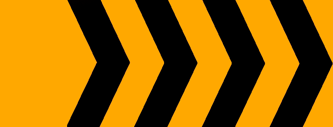
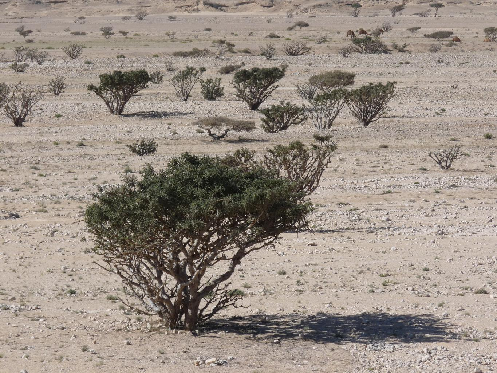
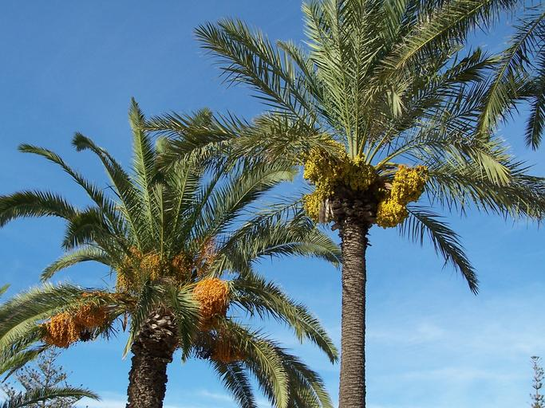
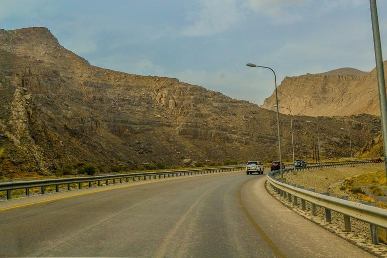
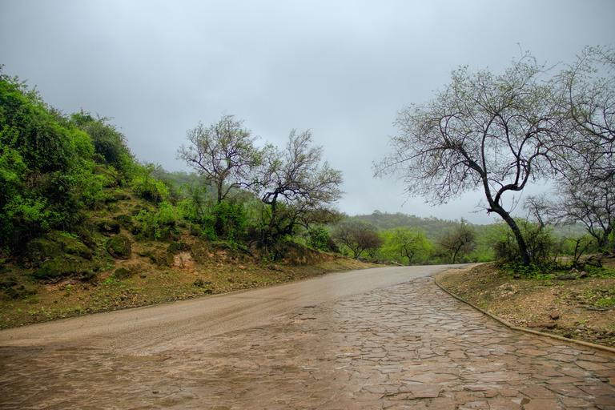
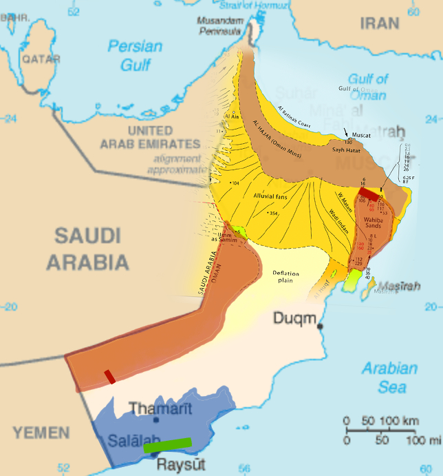

国・地域の見分け方
- ドメインは.om
- 右側通行
- ナンバープレートは黄色か赤色
- 標識の棒白黒のストライプがある


オレンジと黒のシェブロン。町名や次の町への距離を書いた看板などは青色。標識の棒に白黒のストライプが多いのはオマーンかUAE。



北東の沿岸部地域を中心にナツメヤシが植えられておりナツメヤシ農園もある。The Million Date Palm Plantation Project(意訳：ナツメヤシ100万本プロジェクト)により全国的にナツメヤシの栽培が進められた(参考文献 Million Date Palm Plantation Project)。

ミッドストリーム系企業の看板にパイプラインの行先が書いてある。WADIからMIRIBATへのパイプラインだと分かるので、その間くらいに場所があるはず。日本が輸入する天然ガスの３％以上はオマーン産(参考文献 オマーン国営企業、2025年からの10年間にわたる液化天然ガス（LNG）売買契約を締結)。
州・地域の絞り込み
- 北部と南部に山岳地帯があり、間には平坦な砂漠が広がっている
- 北部 アル・ハジャル山脈があり険しい岩山が多い
- 中央部 カタールほど完全な平坦ではない
- 南部 ドファール山脈周りは雨が降りやすく緑も多い。細かいがれきのような岩が転がっている。
- 土の色や景色

Dr Brains - 投稿者自身による著作物 by NordNordWest, GFDL 1.2, リンクによる


乾燥している地域もある。北のような切り立った断崖は少なく、小さい岩が転がっていることが多い。牧畜が盛んなので牛・ラクダ・ヤギなどが歩いていたり、飼うための囲いもあるっぽい(参考文献 ドファールの農業)。
砂丘のあるエリアが東と内陸にある(参考文献 Glennie, Kenneth W., et al. 『Geological importance of luminescence dates in Oman and the Emirates: An overview.』 Geochronometria 38 (2011): 259-271.)らしい。画像の一部は参考文献より引用。

都市・町の絞り込み
- マシーラ島という離島がある(参考文献 Dhofar Governorate)

By ELSIRIDERMOTO - Own work, CC BY-SA 4.0, Link